plotdap
The R package plotdap makes it easy to visualize ‘tabledap’ and ‘griddap’ objects obtained via the rerddap package.
Installation
plotdap isn’t (yet) on CRAN, but you can install the development version with:
devtools::install_github('ropensci/plotdap')Getting started with plotdap()
The plotdap() function makes it easy to visualize data acquired via tabledap() or griddap(). Regardless of the data you want to visualize, you’ll always want to start a plot via plotdap(), where you may specify some “global” plotting options. Subsequent sections will demonstrate how to add tables/grids via add_tabledap()/add_griddap(), but for now we’ll focus on options provided by plotdap(). Most importantly, the first argument decides whether base or ggplot2 graphics should be used for the actual plotting.
library(plotdap)
plotdap()
plotdap("base")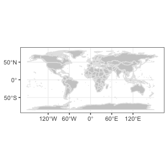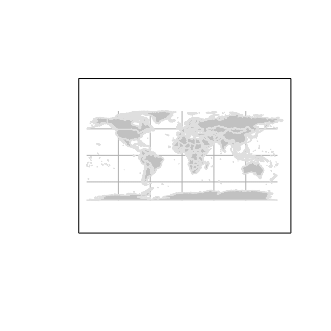
In addition to choosing a plotting method, plotdap() is where you can define properties of the background map, including the target projection using a valid coordinate reference system (CRS) defintion. Projection is performed using the PROJ.4 library, and spatialreference.org is a great resource for finding PROJ.4 CRS descriptions. Using the search utility, you can for example, search for “South Pole” and pick from a number of options. Here I’ve chosen the MODIS South Pole Stereographic option and copy-pasted the Proj4 page with the CRS definition:
plotdap("base",
mapTitle = "MODIS South Pole Stereographic",
mapFill = "transparent",
mapColor = "steelblue",
crs = "+proj=stere +lat_0=-90 +lat_ts=-90 +lon_0=-63 +k=1 +x_0=0 +y_0=0 +ellps=WGS84 +datum=WGS84 +units=m +no_defs"
)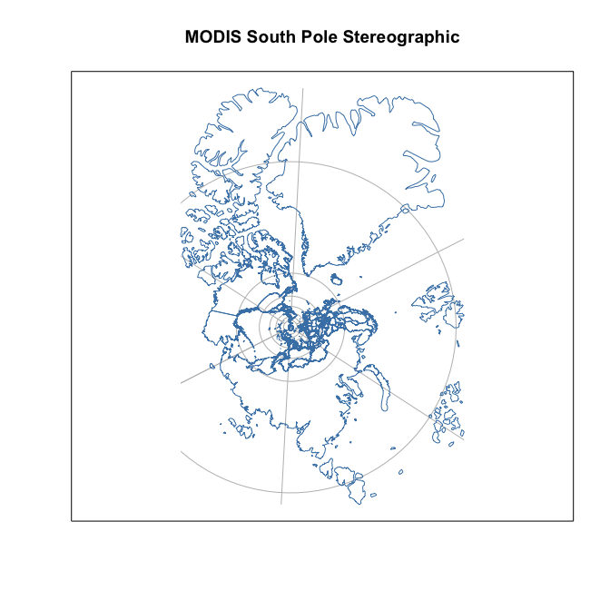
You might notice that some projections aren’t “well-defined” on a global scale, and thus, may result in an error, or a “broken” looking map. For instance, this Albers projection centered on Alaska:
alaska <- "+proj=aea +lat_1=55 +lat_2=65 +lat_0=50 +lon_0=-154 +x_0=0 +y_0=0 +ellps=GRS80 +towgs84=0,0,0,0,0,0,0 +units=m +no_defs"
plotdap("base", crs = alaska)#> Error code: 6
#> Error in CPL_transform(x, crs$proj4string, crs$epsg) : OGR errorThat does not mean we can’t use this (or similar) projections – we just have to be careful that they are sensible given the lat/lon limits. By default, those limits span the entire world, but as we’ll see later, the limits are shrunk to the given data (i.e., griddap() / tabledap()) limits. In other words, we should expect this projection to work once we “add” some data located near Alaska to the visualization. However, in case you want to make a map without any data, or want to customize the background map in some special way, you can supply an sf object (or something coercable to an sf object) to the mapData argument.
library(sf)
library(mapdata)
w <- st_as_sf(maps::map("world", plot = FALSE, fill = TRUE))
us <- st_transform(subset(w, ID == "USA"), alaska)
plotdap(mapData = us)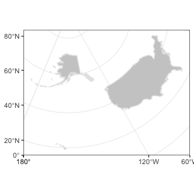
With the odd exception of window sizing and projections, the options in plotdap() should just work in a similar way for either plotting method. However, there are some useful options that are deliberately left out, since they work differently based on the plotting method.
Since the result of plotdap() is always a map, it always forces a fixed aspect ratio (i.e., \(\frac{height}{width}\) of graph equals \(r=\frac{latitude}{longitude}\)). For this reason, the current size of your graphics device may not be sensible for the value of \(r\) (for instance, if \(r\) is high, but the height of the graphics device is small, you may see an error such as: polygon edge not found since the device cannot possibly render the result under the conditions). For a number of reasons, plotdap() will not automatically resize your graphics device; instead, it’s recommended that you use a reliable graphics device such as Cairo, and use a height/width ratio close to \(r\).
# write plot to disk using the Cairo package
library(Cairo)
# (latitude limits) / (longitude limits)
r <- 85 / 120
CairoPNG("myPlot.png", height = 400 * r, width = 400, res = 96)
# alter default margins for base plotting (leaving just enough space for a title)
par(mar = c(0, 0, 1, 0))
plotdap("base", mapData = us, mapTitle = "Albers projection of Alaska")
dev.off()
#> quartz_off_screen
#> 2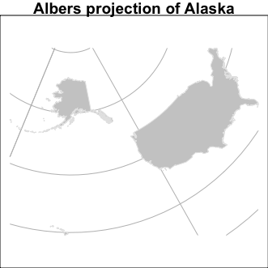
More advanced users that know some base/ggplot2 plotting may want more control of certain aspects of the plot (a later section – Customizing plotdap() objects – covers this topic).
Adding tabledap() layers
The add_tabledap() function allows you to add markers that encode variable(s) obtained via tabledap() to an existing plotdap() object. For example, suppose we have the following sardines data, and wish to understand the frequency of subsample counts:
sardines <- tabledap(
'FRDCPSTrawlLHHaulCatch',
fields = c('latitude', 'longitude', 'time', 'scientific_name', 'subsample_count'),
'time>=2010-01-01', 'time<=2012-01-01', 'scientific_name="Sardinops sagax"'
)
sardines
#> <ERDDAP tabledap> FRDCPSTrawlLHHaulCatch
#> Path: [/Users/cpsievert/Library/Caches/R/rerddap/8cb244e059b86865b7933a3d9b72fe16.csv]
#> Last updated: [2017-06-08 10:41:14]
#> File size: [0 mb]
#> # A tibble: 56 x 5
#> latitude longitude time scientific_name subsample_count
#> * <chr> <chr> <chr> <chr> <int>
#> 1 38.1945 -124.07 2010-04-16T03:36:00Z Sardinops sagax 50
#> 2 37.609 -123.6561 2010-04-18T02:54:00Z Sardinops sagax 38
#> 3 37.4188 -123.3463 2010-04-18T10:48:00Z Sardinops sagax 1
#> 4 36.984 -123.3326 2010-04-19T03:27:00Z Sardinops sagax 50
#> 5 36.8118 -123.6868 2010-04-19T06:42:00Z Sardinops sagax 50
#> 6 36.7333 -123.8675 2010-04-19T09:55:00Z Sardinops sagax 50
#> 7 35.922 -124.7985 2010-04-20T07:21:00Z Sardinops sagax 39
#> 8 36.992 -123.7716 2010-04-27T02:56:00Z Sardinops sagax 2
#> 9 36.9725 -124.1091 2010-04-27T07:02:00Z Sardinops sagax 9
#> 10 36.9925 -124.3968 2010-04-27T10:04:00Z Sardinops sagax 50
#> # ... with 46 more rowsAt the very least, add_tabledap() needs a base map (i.e., a plotdap() object), the tabledap() data, and a formula defining the variable of interest (for encoding the color of the markers). In R, you can create a formula by prefixing ~ to some expression. This formula can simply reference a variable already residing in the dataset (e.g., ~subsample_count) or it can be a function of some variables (e.g. ~log2(subsample_count)):
add_tabledap(
plotdap(),
sardines,
~subsample_count
)
add_tabledap(
plotdap(crs = "+proj=robin", mapTitle = "Log subsample count"),
sardines,
~log2(subsample_count)
)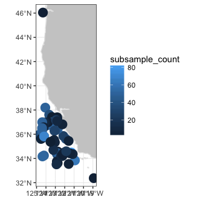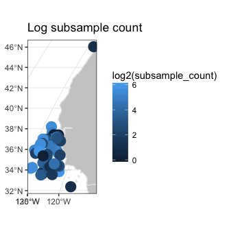
Since time is an important variable in many tabledap() objects, add_tabledap() also has a animate argument which allows you to easily animate over the time variable. It is also easy to alter the color scale and symbol type via the color and shape arguments. For details about these arguments, please refer to the documentation on help(add_tabledap)
add_tabledap(
plotdap(crs = "+proj=robin"),
sardines,
~subsample_count,
color = "density",
shape = 4,
animate = TRUE
) 
Adding griddap() layers
Similar to add_tabledap(), the add_griddap() function makes it easy to add rasters (i.e., rectangular tiles) to a plotdap() object. To demonstrate, lets obtain some of the latest sea surface temperatures along the western coast of the US.
murSST <- griddap(
'jplMURSST41', latitude = c(22, 51), longitude = c(-140, -105),
time = c('last', 'last'), fields = 'analysed_sst'
)
murSST
#> <ERDDAP griddap> jplMURSST41
#> Path: [/Users/cpsievert/Library/Caches/R/rerddap/5d5022a6daf4b9e7957e864f84600bbf.nc]
#> Last updated: [2017-06-08 10:57:49]
#> File size: [81.28 mb]
#> Dimensions (dims/vars): [3 X 1]
#> Dim names: time, latitude, longitude
#> Variable names: Analysed Sea Surface Temperature
#> data.frame (rows/columns): [10156401 X 4]
#> # A tibble: 10,156,401 x 4
#> time lat lon analysed_sst
#> <chr> <dbl> <dbl> <dbl>
#> 1 2017-06-06T09:00:00Z 22 -140.00 23.667
#> 2 2017-06-06T09:00:00Z 22 -139.99 23.675
#> 3 2017-06-06T09:00:00Z 22 -139.98 23.676
#> 4 2017-06-06T09:00:00Z 22 -139.97 23.674
#> 5 2017-06-06T09:00:00Z 22 -139.96 23.670
#> 6 2017-06-06T09:00:00Z 22 -139.95 23.670
#> 7 2017-06-06T09:00:00Z 22 -139.94 23.677
#> 8 2017-06-06T09:00:00Z 22 -139.93 23.688
#> 9 2017-06-06T09:00:00Z 22 -139.92 23.701
#> 10 2017-06-06T09:00:00Z 22 -139.91 23.714
#> # ... with 10,156,391 more rowsAgain, similar to add_tabledap(), add_griddap() needs a base map (i.e., a plotdap() object), the griddap() data, and a formula defining the variable of interest (for encoding the fill of the rectangles). The add_griddap() function also has a maxpixels argument which sets a maximum threshold for the number of cells (i.e., pixels) to use before projection and plotting occurs. Compared to ggplot2, base plotting is much more efficient at rendering raster objects, so it might be worth increasing the threshold in that case:
# reduce the number of trailing digits in the legend
options(digits = 2)
# remove plotting margins
par(mar = c(0, 0, 0, 0))
add_griddap(
plotdap("base", crs = "+proj=robin"),
murSST, ~analysed_sst, maxpixels = 50000
)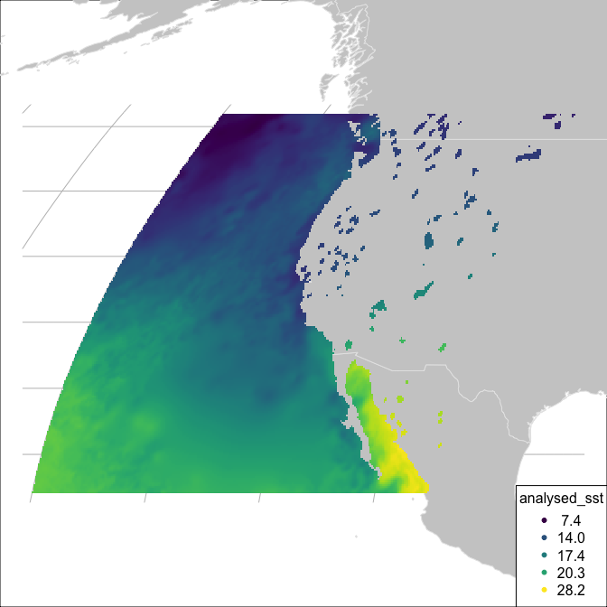
The murSST grid has a single time point (i.e., length(unique(murSST$data$time)) == 1), but what do we do when there are multiple time points? In addition to animating multiple grids (a la add_tabledap()), you also have the option to summarize multiple grids into a single grid. To demonstrate, lets grab some wind speeds measured along the west coast of the US.
wind <- griddap(
'erdQMwindmday', time = c('2016-11-16', '2017-01-16'),
latitude = c(30, 50), longitude = c(210, 240),
fields = 'x_wind'
)
unique(wind$data$time)
#> [1] "2016-11-16T00:00:00Z" "2016-12-16T00:00:00Z" "2017-01-16T00:00:00Z"When faced with multiple time periods, and animate = FALSE (the default), the time argument is used to reduce multiple grids (i.e., raster bricks) to a single grid (i.e., a single raster layer). You can pass any R function to the time argument, but when animate = FALSE, you should take care to ensure the function returns a single value. The default uses the mean() function so that each cell represents the average (in this case amongst three time points), but we could easily set this to var() to get the variance for each cell:
# add space for a title
par(mar = c(0, 0, 1, 0))
add_griddap(
plotdap("base", crs = alaska, mapTitle = "Mean wind speed"),
wind, ~x_wind
)
add_griddap(
plotdap("base", crs = alaska, mapTitle = "Variance of wind speed"),
wind, ~x_wind, time = var
)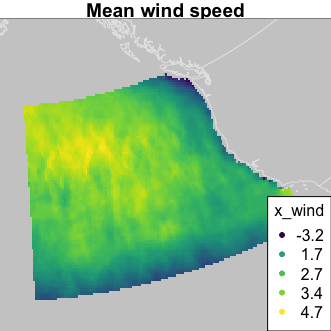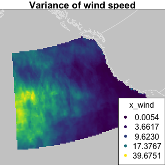
If you just want to animate the raw grid values over time (instead of computing summary statistic(s) for each cell), you can set time to the identity function, then set animate = TRUE:
add_griddap(
plotdap(crs = "+proj=robin"),
wind, ~x_wind,
time = identity,
animate = TRUE
) 
Combining tables/grids
The plotdap() interface is designed so that you can plot both tables and grids at once (although I don’t recommend trying to plot more than one griddap() or tabledap() object at once). It’s also designed to work well with the %>% operator from the magrittr package so that code can be expressed in a left-to-right (rather than inside-out) fashion:
plotdap("base") %>%
add_griddap(murSST, ~analysed_sst) %>%
add_tabledap(sardines, ~subsample_count)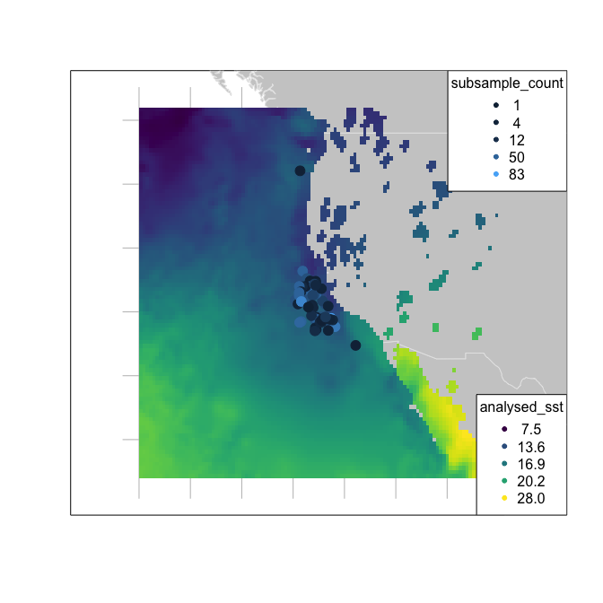
Modifying ggplotdap objects
By this point, you might have noticed some subtle differences in the defaults of plotdap("ggplot2") versus plotdap("base"). The default base version is left intentially minimal as it is often much harder (or impossible) to modify/remove elements from a base graphic once it’s drawn. However, this is fairly easy using the ggplot2 approach (assuming you know a bit of ggplot2), thanks to the add_ggplot() function (think of it like the + operator in ggplot2).
library(ggplot2)
plotdap(crs = "+proj=robin") %>%
add_tabledap(sardines, ~subsample_count, size = 1) %>%
add_ggplot(
labs(
subtitle = "Sardinops sagax samples",
caption = "Sardines are yummy"
),
theme_minimal(),
theme(axis.ticks = element_blank(), axis.text = element_blank())
)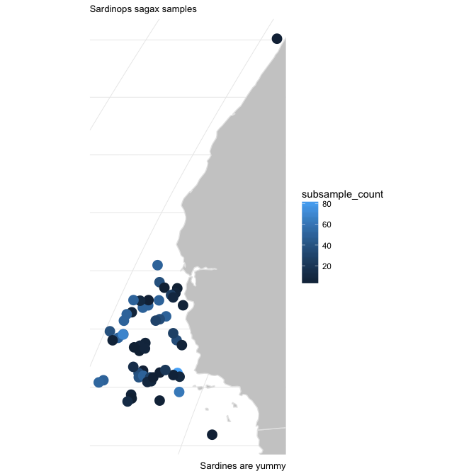